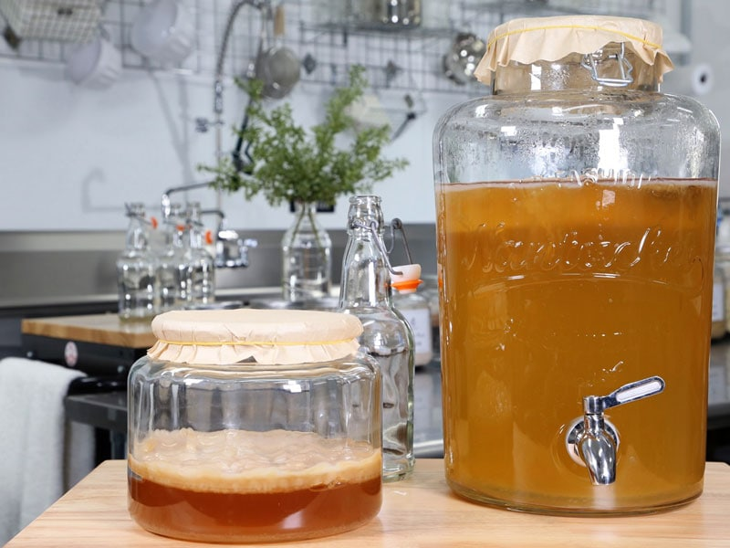
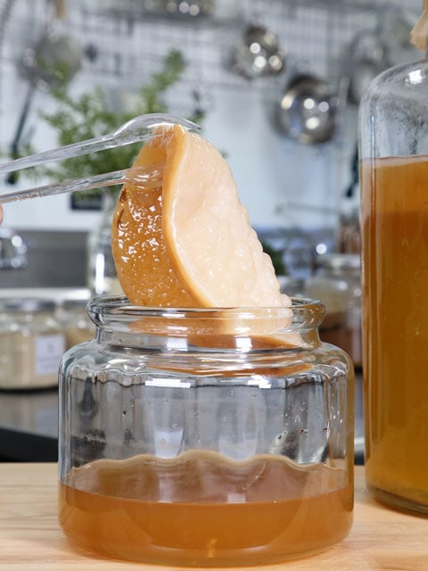
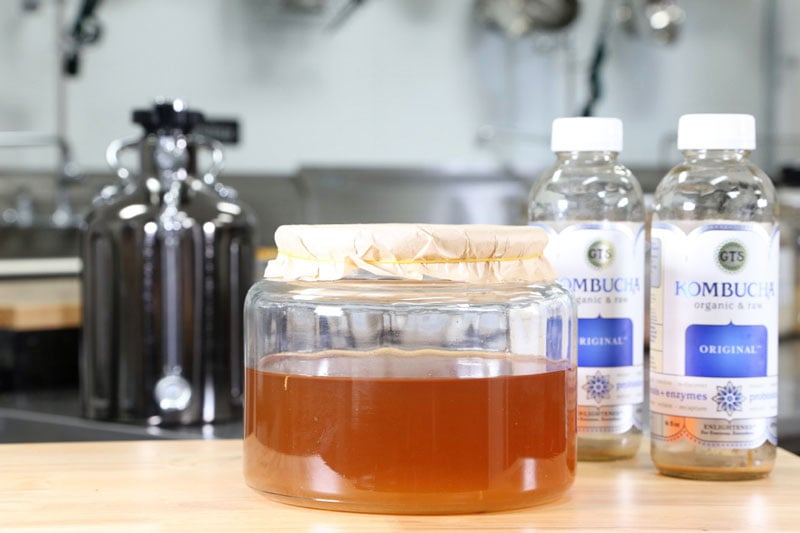
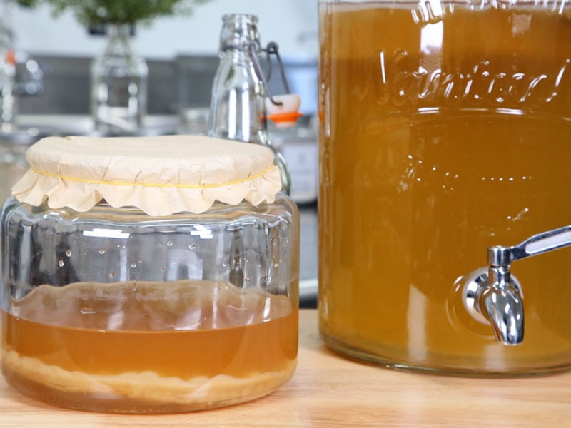

How to Grow your own SCOBY from Scratch
The easiest way to get a SCOBY is just to buy a kombucha starter kit online or acquire one from a friend, but I get that it isn’t always possible. And I suppose that is why you are here reading this… to learn how to create one from the ground up. Ok, maybe not entirely from the ground up… we are going to cheat a little. We are going to piggy-back off of a store-bought raw kombucha!

If you’re not aware, 99% of the kombucha’s that you buy in the store come with a starter SCOBY in the jar. I am sure you have seen weird alien looking things floating the in there, heck you might have even swallowed them when sipping away. (which is completely fine).
These floaters are a form of bacteria and yeast that fell from the mother SCOBY when brewing. All that you need for this science experiment is; Sweetened tea and a Symbiotic Colony Of Bacteria and Yeast.
I find that the store bought GT’S brand original kombucha is the best. I haven’t tested all brands out there, but I have been successful with this one. If you can’t find this GT’S, look for a bottled kombucha that has brown and/or clear strands, and possibly even what may appear as a mini baby “jellyfish” floating around in the bottle. Whatever you do, don’t go shaking the bottle… you will have an effervescent volcano explosion on your hands.
It’s important to note that when you have grown a SCOBY through this method, it will be smaller in diameter and thickness. After a few rounds of making kombucha, it will thicken, become smooth, and take a uniform color. When you see photos of large thick ones, that is a good sign of maturity.
Since I practice the Continous Brew method, I use a larger brewing vessel. (2.5-gallon jar) For this size jar, I used two bottles of kombucha and two cups of sweet tea. I wanted enough to get the whole surface covered with a SCOBY. If you wish to use a small brewing vessel, then use just one bottle and one cup of sweet tea. Note – The SCOBY will grow and mature to fill the width of whatever sized container you use. Over time, you can progressively increase the size of the jar you use, and the amount of kombucha you want to produce.
It took 15 days to grow the SCOBY that you see in the photos. It is thick and very healthy. Due to the coolness in my kitchen, I had to put a heat band around the vessel to ensure that it is cultured at the right temperature. I couldn’t be any more pleased with the outcome.
Well, I think that about covers it. This is a great thing to do if you have young ones in the home since they can watch the process and see something grow! If you have any questions, please feel free to ask below in the comment section. blessings, amie sue

Ingredients:
yields 1 SCOBY
- 1-2 bottles raw, unflavored store-bought kombucha
- 1-2 cups sweet tea (recipe below)
Preparation:
Making the Sweet Tea
- Place 2 cups of water in a saucepan and bring to a boil.
- Add 1/3 cup of sugar to the pot and stir for 5 minutes or until the sugar has dissolved.
- Turn the heat off but keep the pot on the burner to keep the water warm.
- Add 4 bags of tea to the water and with a wooden spoon, push them beneath the surface of the water. Stir the tea bags in the water a couple of times. Set a timer for 20 minutes and let it steep.
- Remove the tea bags, squeezing out any excess water.
- Allow the sweet tea to cool to room temperature before adding to the bottled kombucha.
Prepare the Brewing Vessel
- Sterilize your kombucha growing container.
- Make sure the container has cooled before adding the kombucha to it.
- Pour the store-bought kombucha and sweet tea that you made in the vessel.
- Cover the jar with a tight-weave dish towel or a paper coffee filter. Secure the covering with a tight rubber band.
- Ferment the tea in a warm spot, 75-85 degrees (F), out of direct sunlight, placing it somewhere where it will not be disturbed, for about seven days.
- In fact, don’t even look at it! Its growth period may cause you to question the progression. Let it peacefully go through its growing stages. :) BUT go ahead and bless it, sing to it… surround it with love! It’s a living organism for Pete’s sake.
- In about a weeks time, you will start to see a baby SCOBY developing across the surface of the liquid.
- A new SCOBY starts off looking like a clear film and over time it slowly becomes less translucent, more white, and thicker as time goes on.
- If no signs of SCOBY development appear after three weeks, discard the batch and start over.
- Wait until the SCOBY is at least 1/4 inch thick before using it to brew the first batch of kombucha tea. Reaching that thickness may take up to 30 days.
- Make your first batch of kombucha a small one so as not to overwhelm your new SCOBY.
- A SCOBY matures during a few rounds of making kombucha; it will thicken, become smooth, and take on a uniform color.
- The liquid in the jar should always smell fresh and slightly vinegary (this will become more pronounced the further you are in the process)
- Once you have a healthy SCOBY, you can start brewing your own magical kombucha! Click (here) to learn how to set a continuous brew system.

This picture was taken on Sept. 12th, 2018. In just 15 short days, I grew a SCOBY that was well over 1/4″ thick! It is thick and healthy!

After handling the SCOBY, it sunk to the bottom of the vessel. That’s ok… it will resurface in time.
Signs that something may be OFF
- The liquid you have in the jar will smell very tart and vinegary – but if it smells “off” (like rancid), then you will know that you should dump it and start over.
- If your SCOBY has a fuzzy green or black spot(s), then that may mean you have spots of mold, and you will also want to dump that and start over.

What is Kombucha?
Kombucha Continuous Brew Method
Kombucha Maintenance of Continuous Brew
Kombucha – Ingredients Needed
Testing Sugar Levels in Kombucha
Bottling Kombucha from a Continuous Brew
Second Fermentation of Kombucha – Adding Flavor & Effervescence
Kombucha Aesthetics
Kombucha SCOBY Hotel
Dealing with Fruit Flies
© AmieSue.com